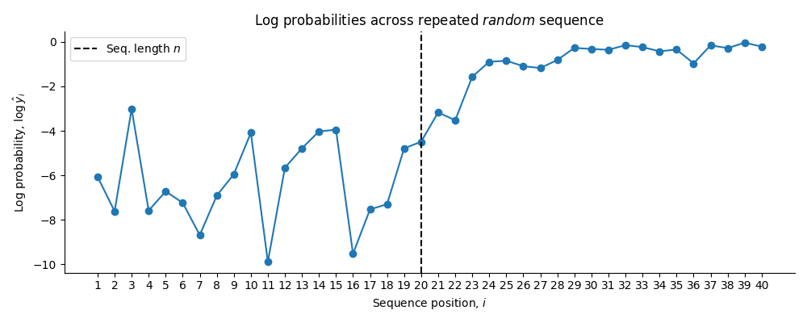

Exercise Class 5
This week we start from this repository.
Last week we played around with one instance of a pre-trained transformer, the GPT-2 model. What truly set transformers apart from earlier architectures is the attention mechanism. We postponed discussing it then, but now it’s time to dive in. To appreciate its impact, just look at the citation count of the 2017 paper “Attention is all you need”. That work, and the architecture it introduced, arguably ignited the current era of generative AI.
Exercise 1 - Visualizing Attention
The goal of this exercise is to plot the attention matrices (defined in Equation 1) of the GPT-2 model using the circuitsvis library.
Add
circuitsvisas a project dependency usinguv.Load the GPT-2 model from last week
from transformers import GPT2LMHeadModel, GPT2Tokenizer tokenizer = GPT2Tokenizer.from_pretrained("gpt2") model = GPT2LMHeadModel.from_pretrained("gpt2", output_attentions=True)Tokenize the sentence
The chicken did not cross the road because it was too tired.using thetokenizer. Before doing so, prepend thebos_tokentoken to the sentence (this can be found astokenizer.bos_token).Pass the tokens through the model as done last week. Set
output_attentions=Trueto get access to the attention matrices of each layer of the model. Store the output in a variable calledoutputs. You should be able to see the attention matrices of layer \(0\) by inspecting:outputs.attentions[0].Get the tokens as a list of
strvalues usingtokenizer.batch_decode. Setclean_up_tokenization_spaces=False.Note: you might want to squeeze the input tensor to get a list of str tokens.
Import the
attention_headsplotting function:from circuitsvis.attention import attention_headsThen plot all the attention matrices (\(12\) in total) of the first layer (index \(0\)), the ones in
outputs.attentions[0], using theattention_headsfunction. You should pass the list of tokens transformed to string values and the tensor of attention matrices. The input tensor of attention matrices to the function should be of dimension(12, n, n)wherenis the number of input tokens; hence, you should squeezeoutputs.attentions[0].The resulting output should be:
Interpret the output. Get guidance from Equation 1 and the book.
Note: if you do this exercise in a notebook you should be able to see the figure directly. If you do it in a script and want to save the plot (it is a HTML file) then you can use the following snippet:
html = attention_heads(_) # Placeholder should be your code with open("output/layer0.html", "w") as f: f.write(str(html))Open this file using e.g. your browser.
Do the same but for the last, i.e. \(12\)th, layer. You should get output similar to:
interpret the matrices and compare them to the ones for the first layer in the previous exercise.
Use the snippet below to draw \(20\) random tokens.
torch.manual_seed(2025) seq_len = 20 random_tokens = torch.randint(low=0, high=100, size=(1, seq_len))Construct a tensor of
random_tokensrepeated (a(1, 40)-dimensional tensor). Prependtokenizer.bos_token_idto this repeated tensor resulting in a(1, 41)-dimensional tensor. Denote this tensor bytokens.Note: the sequence of tokens should equal:
[N', 'Y', '"', 'D', '"', 'O', '/', 'C', 'c', 'A', ']', 'l', '(', 'Y', 'a', 'o', '=', '^', 'c', 'O', 'N', 'Y', '"', 'D', '"']Pass the tensor
tokensthrough the model; use the same approach as in 4. Plot the attention matrices of layer \(6\). You should get output similar to:Try to interpret the attention matrices
Head 1andHead 5of the first layer. E.g. entry \((30, 11)\) in the attention matrix ofHead 1; the destination token isaand source token iso(destination = query; source = key). Why does tokenaattend this much to tokeno?Get the output logits from the forward pass of the previous exercise. Apply
log_softmaxto the logits. Then for each token \(i\) extract the log probability of the correct next token in the sequence. Use the method.detach().numpy()to convert it into a numpy array. Compute the average log probability on the first and second half of the sequence. Finally, plot all the log probabilities usingmatplotlib. You should get a plot similar to:
and loss on the two halves equal to:
Performance on the first half: -6.289 Performance on the second half: -0.843Interpret the output.
Note: we just passed a repeated sequence of random tokens into the model and somehow the loss (the loss is the negative of the log probabilities) is much smaller on the second half. The model recognizes that the sequence is repeated and learns, in-context, that it should predict the token following the current token in the previous repetition of the sequence. This is an emergent ability of the model. If you are interested in more of this curious behaviour see e.g. this paper. The exercises was inspired by the Arena Transformer Interpretability course.
Exercise 2 - Computing Attention
The goal of the following exercise is to compute the attention matrices for the first layer of GPT-2 for a given input sentence.
From last lecture, recall that the core components of the multi-head attention mechanism are the key, query, and value matrices. In what follows we focus on a single head; the multi-head case simply repeats the same procedure for each head.
The input is a matrix \(X \in \mathbb{R}^{n \times d}\) consisting of \(n\) tokens (e.g. a tokenized sentence). For the first layer it equals the embedded tokens transformed by a layer norm, for later layers it equals the output of the previous layers. The query, key and value matrices are computed using the weight matrices \[\begin{align} W^{K}, W^{Q} \in \mathbb{R}^{d \times d_{k}}, \quad W^{V} \in \mathbb{R}^{d \times d_{v}} \end{align}\] where \(d_{k} = d_{v} = 64\). The query, key and value matrices are computed as: \[\begin{align*} Q = XW^{Q} + b^{Q}, \quad K = XW^{K} + b^{K}, \quad V = XW^{V} + b^{V} \end{align*}\] where \(Q, K, V \in \mathbb{R}^{n \times 64}\) and \(b^{Q}, b^{K}, b^{V} \in \mathbb{R}^{64 \times 1}\).
The self-attention step for an entire sequence of \(n\) tokens for one head equals: \[ \begin{align*} A := \mathrm{softmax}\left( \mathrm{mask}\left(\frac{Q K^{T}}{\sqrt{d_{k}}}\right) \right) \in [0, 1]^{n \times n}, \end{align*} \tag{1}\] \[ \begin{align} \texttt{head} & = AV \in \mathbb{R}^{n \times d_{v}} \\ O & = \texttt{head}W^{O} \in \mathbb{R}^{n \times d}, \quad W^{O} \in \mathbb{R}^{d_{v} \times d}, \end{align} \tag{2}\] where the \(\mathrm{softmax}\) is applied row-wise, hence the rows sum to \(1\). The quantity \(A\) in Equation 1 is the attention matrix of the given head. This is the matrix we plotted in the previous exercise. The quantity \(O\) in Equation 2 is the attention output of the given head. The masking is done as follows: \[\begin{align*} \mathrm{mask}\left(\frac{Q K^{T}}{\sqrt{d_{k}}}\right) := \frac{Q K^{T}}{\sqrt{d_{k}}} + M, \end{align*}\] where the “causal mask” \(M\) is a lower-triangular matrix \(M \in \{0, -\infty\}^{n \times n}\): \[\begin{align*} M = \begin{bmatrix} 0 & -\infty & -\infty & \cdots & -\infty \\ 0 & 0 & -\infty & \cdots & -\infty \\ 0 & 0 & 0 & \cdots & -\infty \\ \vdots & \vdots & \vdots & \ddots & \vdots \\ 0 & 0 & 0 & \cdots & 0 \\ \end{bmatrix}. \end{align*}\] The \(\mathrm{softmax}\) will set the \(-\infty\) entries to \(0\).
What is the intuition for Equation 1? A given row, \(A_{i, \cdot}\), gives the attention scores between token \(i\) and all tokens \(j \leq i\) (the tokens coming before token \(i\)). Because of the autoregressive structure, token \(i\) is not allowed to attend to a token \(k > i\) (the ones following \(i\) in the sentence are masked out). The matrix in Equation 1 computes this for all allowed pairs of tokens. The matrices \(Q\) and \(K\) consist of \(n\) row vectors stacked on top: \[\begin{align*} Q = \begin{bmatrix} q_{1}^{T} \\ \vdots \\ q_{n}^{T} \\ \end{bmatrix}, \quad K = \begin{bmatrix} k_{1}^{T} \\ \vdots \\ k_{n}^{T} \\ \end{bmatrix}. \end{align*}\] Transposing \(K\) we get a \(d \times n\) matrix \[\begin{align*} K^{T} = (k_{1}, \ldots, k_{n})^{T} \in \mathbb{R}^{d \times n} \end{align*}\] The product \(QK^{T}\) can then be written as: \[\begin{align} \label{eq:qkt} QK^{T} = \begin{bmatrix} q_{1}^{T} \\ \vdots \\ q_{n}^{T} \\ \end{bmatrix} (k_{1}, \ldots, k_{n}) = \begin{bmatrix} q_{1}^{T} k_{1} & \cdots & q_{1}^{T} k_{n} \\ \vdots & \ddots & \vdots \\ q_{n}^{T} k_{1} & \cdots & q_{n}^{T} k_{n} \\ \end{bmatrix} \in \mathbb{R}^{n \times n} \end{align}\] where each entry \((i, j)\) equals \(q_{i}^{T} k_{j}\); a dot product between the \(i\)th query vector and the \(j\)th key vector. This is the similarity score between token \(i\) and \(j\); scaling this and applying a row-wise softmax gives the attention score between token \(i\) and \(j\) (how much does token \(i\) attend to token \(j\)).
Use the GPT-2 model and tokenizer as in the previous exercise to tokenize:
sentence = """The chicken did not cross the road because it was too tired.""" text = tokenizer.bos_token + sentenceGet the tensor of tokens.
To arrive at the matrix \(X\) for the attention computation, run the following snippet:
E = model.transformer.wte(tokens) P = model.transformer.wpe(t.arange(tokens.shape[1])) T = E + P h0 = model.transformer.h[0] X = h0.ln_1(T) O, A = h0.attn(X)Relate the code to the model architecture.
We will now compute
AandOmanually.The way GPT-2 computes attention is done in a specific way. The following snippet extracts the matrices into a familiar format. To get weight matrices that looks like the one in the book and the equations above run the following snippet:
cfg = model.config d_head = cfg.n_embd // cfg.n_head # correspond to d_k, d_v in the equations n_embd = cfg.n_embd # correspond to d, the embedding dimension W = h0.attn.c_attn.weight bias = h0.attn.c_attn.bias W_Q, W_K, W_V = W.split(n_embd, dim=1) b_Q, b_K, b_V = bias.split(n_embd, dim=0) W_O = h0.attn.c_proj.weight b_O = h0.attn.c_proj.bias W_Qs = W_Q.split(d_head, dim=1) b_Qs = b_Q.split(d_head, dim=0) W_Ks = W_K.split(d_head, dim=1) b_Ks = b_K.split(d_head, dim=0) W_Vs = W_V.split(d_head, dim=1) b_Vs = b_V.split(d_head, dim=0)The
W_Qs,b_Qs,W_Ks,b_Ks,W_Vs,b_Vsvariables contain the weight and bias matrices for each head of the first layer; they are tuples of tensors. You will use these to compute the attention matrices in the next exercise.Note: if you are uncertain about where the matrices fit in the big picture try inspecting the
modelvariable; for instance by printing it.Compute the attention matrix for the \(i\)th head (of the 12 total heads) for the first layer using the matrices above and the
Xtensor from 2. The mask should be constructed usingtorch.triuand the tensor-methodmasked_fill(mask, float("-inf"))whereQKTis the product of the query and key matrices for the \(i\)th head. Remember to divide by \(\sqrt{d_{k}}\) and apply the softmax row-wise.You can assert that you get the correct output by comparing it to the matrix
A:assert torch.allclose(attn_weights, A[0][i])Compute the \(12\) heads and stack them on top, denote this tensor by
aheads. Then computeOusing the \(12\) heads andW_O, b_O. Check your solution with:assert torch.allclose(aheads @ W_O + b_O, O, atol=1e-6)
Appendix
Things introduced at the exercise class: